ENGINEER 1on1 EVENT [HIGH CLASS]
HAL東京 石田 湊 / Minato Ishida
1-1. 基本情報
1-2. 趣味・関心
1-3. 強み・学習スタイル
1-4. ガクチカ（①〜③）
2-1. 経験概略
2-2. チーム開発
2-3. 個人開発
2-4. インターン経験
2-5. 学校での学び
2-6. 技術スタック
3-1. なりたいエンジニア像
3-2. そのためのプラン（残りの学生生活）
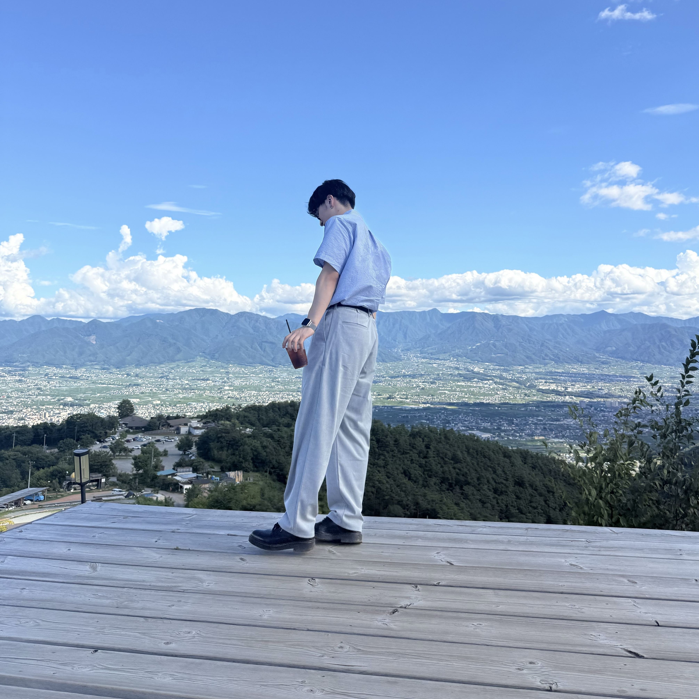
石田 湊 / Minato Ishida
HAL東京 高度情報学科（4年制）
学校でWeb開発やCSの基礎を体系的に修得。
Flutter・SwiftUI・Reactなどのモダン技術を独学で習得。
成長環境を求め大阪から東京へ単身転居。
カンファレンスで社外エンジニアと積極的に交流。
5月からFlutterKaigi運営チームでチーム開発に参加。
App Storeリリースやチーム開発でのPMなど、
学んだ技術を即座に実践・実績化する。
[ここにガクチカ①の見出しを記載]
[ここにガクチカ②の見出しを記載]
[ここにガクチカ③があれば見出しを記載]
[ここにきっかけ・最初に触れた言語について記載]
成長環境を求め単身で転居。
約2ヶ月でフロントエンドを中心に実装。
モバイル / Web を横断した開発経験を継続中。
2
Development Experience
[ここに開発歴の総年数・総プロジェクト数などがあれば記載]
[ここにチーム開発で特に意識していることについて記載]
デジタルプラネタリウム型 日記アプリ
チーム制作 · U-22プロコン
日記をGeminiで感情分析し、結果を3D空間の星空として描画するWebアプリ。
PM兼テックリードとして、要件定義からデプロイまでの全行程を一貫して統括。
[ここに自分の具体的な担当範囲について記載]
[ここにチーム規模・開発期間について記載]
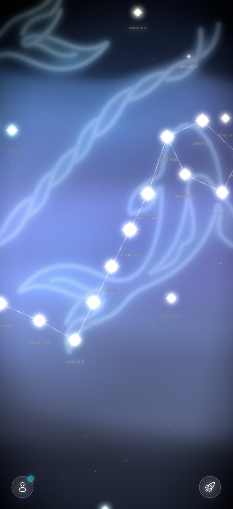
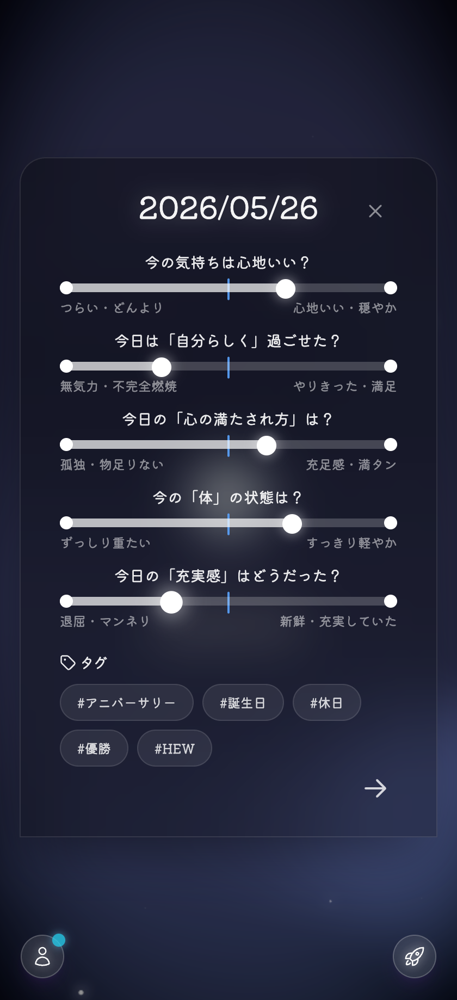
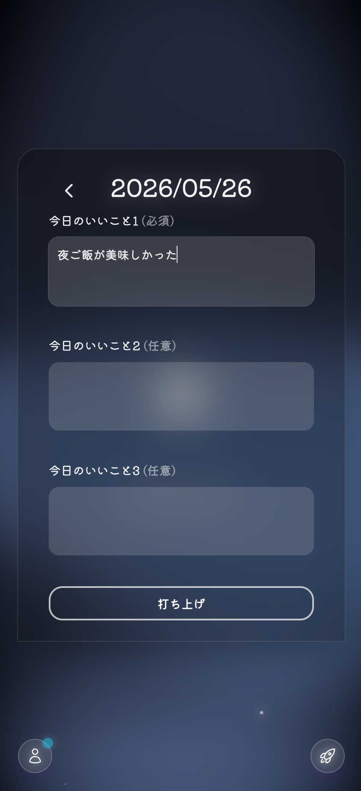
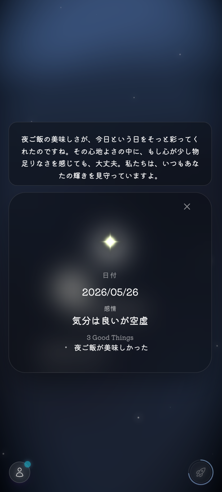
日記の感情を星空として可視化
感情分析はサーバー側で実行
チームに合わせた技術選定とデプロイ
[ここにリードとしての工夫・苦労・改善について記載]
FlutterKaigi 運営チーム（2025年5月〜）
[ここに運営チームでの役割・具体的なタスクについて記載]
[ここにコミュニティ運営・チーム開発で得た学びについて記載]
[ここにその他の個人開発プロジェクトがあれば記載]
思い出管理アプリ
個人開発
App Storeにて一般公開済み。
映画やライブの画像を保存し、自分の「感動」を振り返るためのツール。
要件定義からデザイン、実装、ストア審査対応まで全サイクルを独力で完結。
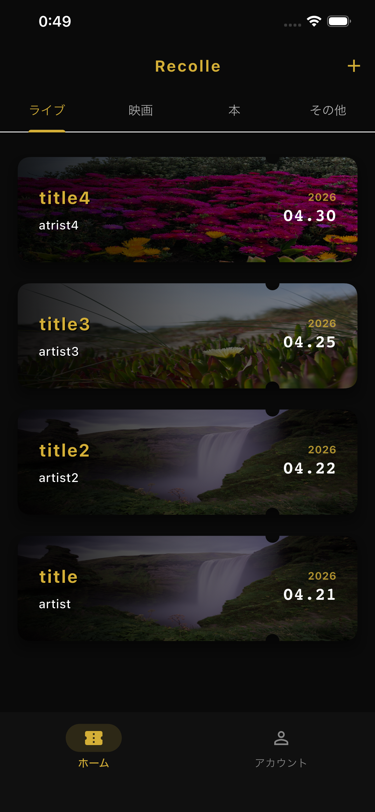
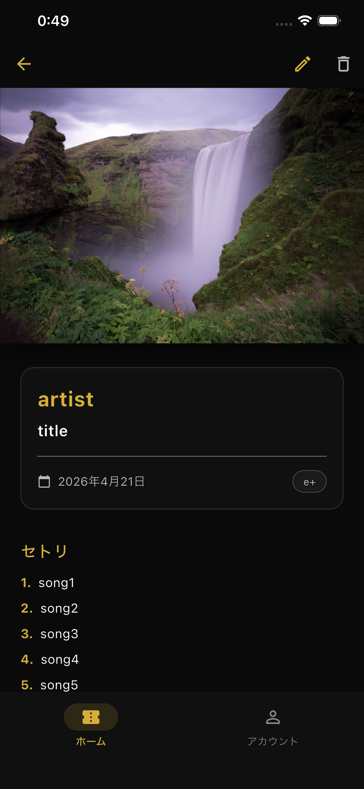
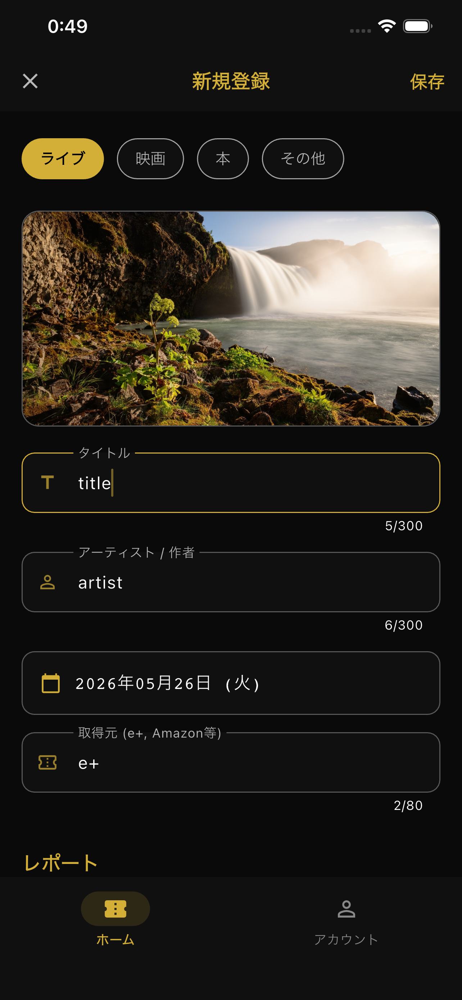
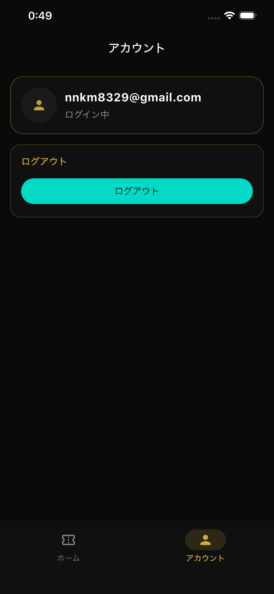
複雑なUIを宣言的に管理
ログイン状態に応じた画面制御と
Deep Link対応
秘匿情報はサーバー側で処理
Forest — フットサル大会管理アプリ
[ここにインターン先の会社名・期間・勤務形態について記載]
[ここに他のインターン経験があれば記載]
フットサル大会管理アプリ
実務インターン · チーム開発
実務インターンとして、未経験からわずか2ヶ月でフロントエンドを中心に実装。
スコア記録、リーグ戦自動生成など、実際の試合現場で使われる実用的な機能をFlutterで構築。アーキテクチャからCI/CDまで実務レベルの開発フローを経験。
[ここに具体的な担当機能・チーム内の役割について記載]
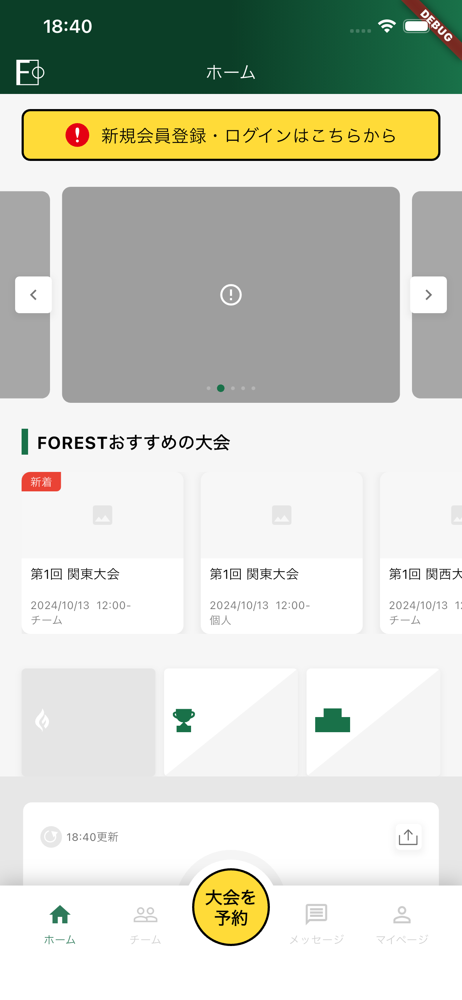
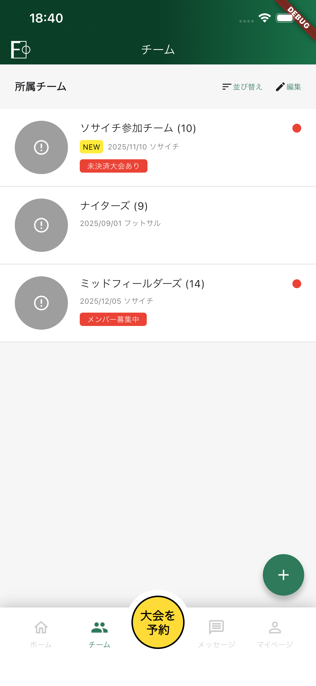
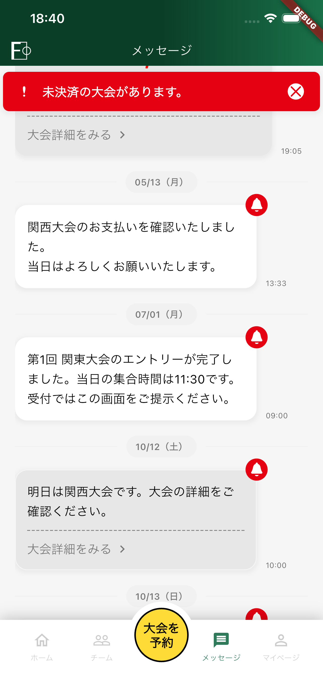
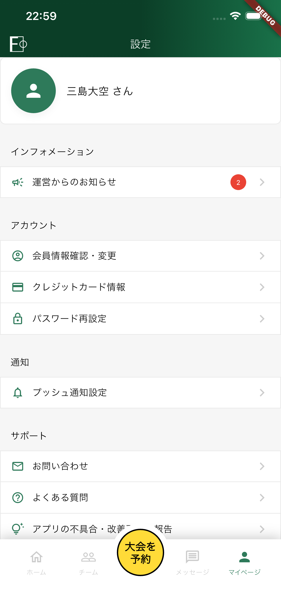
機能単位の構成と、チーム開発に耐える状態管理
型安全な通信と、画面遷移のルール化
環境分離とCI/CDで実務フローを経験
[ここにチーム開発・コードレビュー・実務フローで得た学びについて記載]
HAL東京 高度情報学科（4年制）
[ここに特に印象に残った科目・課題について記載]
[ここに学校のチーム制作・卒業研究などについて記載]
学校で基盤を固め、モダン技術は独学とプロジェクトで習得。両方を組み合わせ、実装速度と設計理解のバランスを意識している。
モバイルを軸に、Web・バックエンドまで一気通貫で届けられる
Flutter を中心に、状態管理・認証・リリースまで経験。実務（Forest）と個人開発（recolle）の両方で App 品質を意識。
React / TypeScript / Three.js で 3D・AI 連携 UI を構築（Nostargia）。
要件定義 → 実装 → デプロイ / ストア公開まで一貫して担当した経験。
プロジェクトを通じて、モバイル・Web（フロントエンド・バックエンド）を横断して開発
[ここに優先的に学びたい技術・分野について記載]
3
Future
モバイル（Flutter/Swift）やWebフロントエンドの開発経験を基盤とし、バックエンドやインフラ設計へと技術領域を拡張する。システム全体を俯瞰し、一貫したアーキテクチャ設計を行える知見を身につける。
特定の言語やフレームワークに固執せず、解決すべきビジネス課題や実現したいUXに合わせて最適な技術を選定する。仮説検証から実装までのサイクルを迅速に回し、実務において価値を提供する。
ユーザー体験に近いプロダクト（特にモバイル）で、日常や業務を支える社会実装力の高いプロダクトを開発する。
[ここに具体的なロールモデル・参考にしているエンジニアについて記載]
[ここに3〜5年後のキャリアイメージについて記載]
モバイル / Web の経験を基盤に、バックエンド・インフラ設計へ領域を拡張。
[ここに具体的な学習テーマ・資格・教材について記載]
インターン / 個人開発 / コミュニティ活動を通じてアウトプットを継続。
[ここに参加予定のイベント・取り組み予定について記載]
[ここに希望業界・企業規模・働き方の希望について記載]
[ここに卒業までのマイルストーン（時期ごと）について記載]